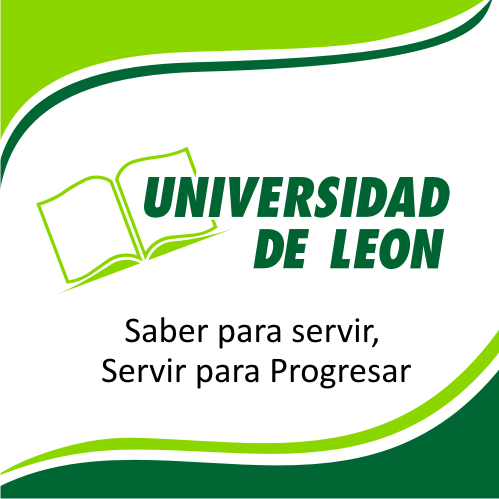

Mi nombre es: Berenice Murillo
Hola bienvenido, me considero una persona muy entusiasta en todos los ámbitos, tanto en la vida cotidianda como en lo profesional, siempre hago mi máximo exfuerzo por brindar soluciones a las personas que me rodean, con actitud proactiva.
Contáctame ahoraMis habilidades
Considero que tengo habilidades de comunicación, soy una persona organizada y responsable en los puestos que he desempeñado, lo cual me da la capacidad de tomar decisiones y resolver problemas.
Uno de mis pasatiempos favoritos es leer, es increíble imaginar todos los personajes y escenarios a través de la lectura. Me considero una persona innovadora en los proyectos que he participado, con felicidad por alcanzar aquellos objetivos deseados.

Sobre mi trabajo
A lo largo de mi educación universitaria desarrolle algunos talleres que me permitieron adquirir las habilidades necesarias para tener una convivencia asertiva y desarrollar habilidades verbales.
Uno de los talleres fue dirigido a una empresa de farmacias "La salud" de Santa Ana Maya, en ella se ofreció capacitación al nuevo personal, así como la explicación de una buena atención al cliente. Otro más estaba dirigido a padres de familia y alumnos del CBTIS 217 de Uriangato, en él se buscaba que los destinatarios tuvieran el conocimiento de una buena orientación vocacional.
Mis proyectos
Entrevistas y encuestas aplicadas a los alumnos de la Secundaria Técnica #21 por vía telefónica
Entrevistas de diagnóstico aplicadas a alumnos del CBTIS 217
Capacitación a personal de farmacias "La salud" de santa Ana Maya de forma presencial

Conferencias/talleres a padres de familia y alumnos del CBTIS 217 y cbta 113 de forma virtual
¡Mis estudios actualmente!

Universidad de Leon plantel Moroleon
Licenciatura en Psicología
Estudie tres años en la facultad de Psicologia, en el mes de septiembre de 2021 fue mi graduación es una de las mayores experiencias y sensaciones que he tenido. Durante mi estancia en la institución obtuve varias menciones por buen aprovechamiento académico.

Udemy
Es una plataforma de aprendizaje en línea
Cuento con 4 cursos en esta plataforma en el ámbito empresarial, los cuales son 1. Curso de nómina para principiantes 2. El ABC de los recursos humanos 3. Excel para negocios y empresas 4. Gestionar tu tiempo para el éxito laboral.